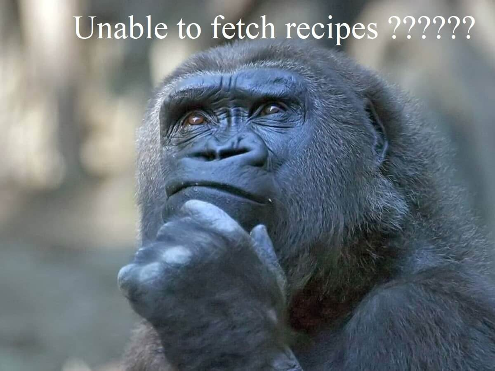

<p>Current number of skip: {{ numberOfSkip }}</p>

<div
    [ngClass]="{
        wrapper: true,
        rightFilterPosition: !(leftFilterPosition$ | async)
    }"
>
    <button class="filterIcon" *ngIf="pageWidth <= 600" mat-icon-button aria-label="Open filter menu" title="Filter">
        <mat-icon class="material-symbols-outlined"> tune </mat-icon>
    </button>
    <div class="filterWrapper">
        <div class="filterContent">
            <button
                *ngIf="pageWidth > 600"
                mat-icon-button
                aria-label="Change filter position"
                title="Change filter position"
                (click)="changeFilterPosition()"
                [ngClass]="{
                    'mat-icon-button': true,
                    matButtonRightPosition: !(leftFilterPosition$ | async),
                    matButtonLeftPosition: (leftFilterPosition$ | async),
                    rightPosition: (leftFilterPosition$ | async)
                }"
            >
                <mat-icon
                    [ngClass]="{
                        rotate180: !(leftFilterPosition$ | async)
                    }"
                    class="material-symbols-outlined"
                >
                    arrow_forward
                </mat-icon>
            </button>
            <app-filter-component></app-filter-component>   
        </div>
    </div>
    <mat-grid-list class="recipesWrapper" [cols]="numberOfCols" rowHeight="500px">
        
        <div *ngIf="mockRecipes">
            <div *ngFor="let recipe of mockRecipes">
                <mat-grid-tile>
                    <app-recipe-card [recipe]="recipe"></app-recipe-card>
                </mat-grid-tile>
            </div>
        </div>
    </mat-grid-list>
</div>

<!-- <button mat-raised-button color="primary" (click)="getRecipes()">get more recipes</button> -->
